Uma forma simples de sentir o efeito da corrente elétrica consiste em
colocar uma colher metálica e um pedaço de folha de alumínio em duas
partes da língua. Estabelecendo contacto entre a colher e a folha de
alumínio, enquanto estão também em contacto com a língua, sente-se um
sabor azedo, produzido pela transferência de cargas elétricas entre os
metais e a língua. Este fenómeno, descoberto no fim do século XVIII,
foi aproveitado por Alessandro Volta, para
construír as primeiras pilhas químicas, dando origem ao rápido
desenvolvimento da tecnologia elétrica. É importante que o metal da
folha seja diferente do metal da colher, que é geralmente de aço ou
alguma liga metálica. Na língua existem iões positivos e negativos e
um dos metais tem maior tendência para atrair os iões negativos e o
outro os iões positivos, criando-se fluxo de cargas através dos dois
metais.
2.1. Potencial eletrostático
As variáveis (vetoriais) que determinam o estado de uma partícula, são
a sua posição
e velocidade
. As componentes destes
dois vetores definem um espaço com seis dimensões,
chamado espaço de fase. Uma partícula com massa
e carga
, numa região onde existe um campo gravítico
e um campo elétrico
está sujeita a uma força resultante
. A equação de movimento é:
(2.1)
em que os campos
e
são funções que dependem da
posição
e, portanto, a velocidade também será uma função que
depende da posição. Multiplicando, escalarmente, os dois lados da
equação de movimento pelo vetor
e lembrando que a
derivada de
em ordem ao tempo é o vetor velocidade
, obtém-se a seguinte equação:
(2.2)
Esta equação permite encontrar a expressão para
em função de
a través do procedimento seguinte: integram-se ambos membros
da equação, desde os valores iniciais (
,
) até
os valores finais (
,
), obtendo-se,
(2.3)
A expressão no primeiro membro da equação é o aumento
da energia cinética da partícula; no
segundo membro, para calcular os dois integrais de linha é necessário
conhecer as expressões para os campos em função da posição. Se os
campos fossem quaisquer campos vetoriais arbitrários, seria necessário
também conhecer de antemão a trajetória da partícula, já que os
integrais de linha no segundo membro podem produzir diferentes
resultados para diferentes percursos de integração. No entanto, neste
caso não é necessário conhecer a trajetória, porque os campos
gravítico e elétrico são ambos
campos conservativos, isto é, o
integral de linha de um desses campos entre dois pontos conduz sempre
ao mesmo resultado, independentemente do percurso de integração.
Por exemplo, a expressão dum campo gravítico uniforme, segundo o eixo
dos
, é
e o integral de linha desse campo, ao
longo de qualquer percurso desde um ponto com coordenada
até
outro ponto qualquer com coordenada
, é igual a:
(2.4)
Ou seja, o integral dá o mesmo resultado para qualquer percurso entre
esses pontos e, assim sendo, trata-se de um campo conservativo e a
energia potencial gravítica de uma partícula de massa
nesse campo
é a função
. O campo gravítico produzido por várias
partículas não é constante, mas também é conservativo, conduzindo a um
integral de linha que não depende do percurso seguido e que pode ser
escrito como a diferença entre os valores de uma função
(energia
potencial gravítica) no ponto inicial e final.
No caso do campo elétrico a situação é análoga; os campos
eletrostáticos (campos elétricos que não variam com o tempo) são
sempre conservativos e, portanto, para cada campo eletrostático existe
uma função da posição,
, que permite calcular o integral de
linha do campo, sem necessidade de conhecer o percurso de integração:
(2.5)
A função
chama-se potencial
eletrostático e a
energia potencial
eletrostática é a expressão:
(2.6)
Em função das energias potenciais gravítica e eletrostática, a equação
2.2 é a lei da
conservação da energia mecânica
da partícula:
(2.7)
A unidade SI de potencial elétrico é o joule
por coulomb, chamado volt e
identificado pela letra V.
(2.8)
No capítulo sobre carga e força elétrica viu-se que a unidade SI do
campo elétrico é o N/C, que pode ser escrito como J/(m·C), pelo que o
N/C é equivalente ao V/m. O campo elétrico pode então ser interpretado
como a diferença de potencial por unidade de comprimento.
Note-se que, como a carga
poder ser positiva ou negativa, a
energia eletrostática
de uma partícula com carga
negativa é maior nos pontos onde o potencial for menor, enquanto que
as partículas com carga positiva têm maior energia nos pontos onde o
potencial é maior. A equação 2.7 implica então que, dentro de
um campo elétrico, as partículas com carga positiva são aceleradas
para regiões com menor potencial e as partículas com carga negativa
são aceleradas para a regiões com maior potencial.
A lei de conservação da energia mecânica é válida unicamente quando as
cargas se deslocam no vácuo. As partículas com carga que dentro de um
material, por exemplo, num condutor ou num gás, estão sujeitas a
forças dissipativas que fazem diminuir rapidamente a sua energia
mecânica.
Exemplo 2.1
Dentro de um tubo de vácuo há duas lâminas condutoras paralelas. Uma
das lâminas é feita dum material radioativo que emite radiação beta
(eletrões que saem dos núcleos). Para acelerar as partículas até à
outra lâmina, liga-se uma diferença de potencial de 150 V entre as
lâminas. Num dado instante é emitida uma partícula beta com velocidade
inicial de módulo 300 m/s que é acelerada até a outra lâmina.
(a) Calcule o módulo da velocidade com que a partícula beta
atinge a segunda lâmina. (b) Se a distância entre as duas
lâminas for 5 cm, qual o módulo do campo elétrico médio entre
elas?
Resolução. Como a carga das partículas é negativa, são
aceleradas na direção do potencial mais elevado; assim sendo, a
diferença de potencial deve ser ligada de forma a que a lâmina
radioativa tenha menor potencial. As cargas negativas também são
acelerados no sentido oposto ao campo e, como tal, as linhas de campo
elétrico apontam para a lâmina radioativa. Admitindo um campo
constante, as linhas de campo são paralelas entre si.
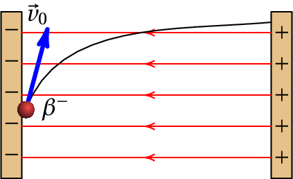
(a) O deslocamento da partícula no vácuo implica conservação da
sua energia mecânica. A carga da partícula beta é a carga do eletrão,
C e a diferença de potencial de 150 V implica
uma diferença de energia potencial eletrostática
(2.9)
Pode parecer pouca energia, mas é um valor muito elevado para um
eletrão que tem massa
kg. Para gerar a mesma
diferença de energia potencial gravítica,
, de
J entre dois pontos, seria necessário que o eletrão
descesse uma altura da ordem de
metros! Como tal, é possível
ignorar a energia potencial gravítica e considerar que o aumento da
energia cinética é igual à diminuição da energia potencial
eletrostática:
Substituindo os valores da massa e velocidade inicial, obtém-se o
módulo da velocidade final:
que é um valor elevado, aproximadamente 2.4% da velocidade da
luz, mas ainda não o suficiente para que seja necessário usar
equações da mecânica relativista. Note-se também que não é
necessário saber em que direção foi disparada a partícula.
(b) O campo elétrico médio calcula-se admitindo que
o mesmo é uniforme. Seguindo um percurso paralelo às linhas
de campo, desde a lâmina da direita até à da esquerda, a
equação 2.5 permite calcular a
intensidade do campo:
2.2. Pilhas químicas
Uma das descobertas mais importantes na história da eletricidade foi a
invenção das pilhas químicas, que permitem fornecer a energia
necessária para manter um fluxo constante de cargas num condutor,
contrariando as forças dissipativas.
O biólogo italiano Luigi Galvani (1737–1798) fez
várias experiências com cargas eletrostáticas e órgãos de animais. A
figura 2.1 mostra o laboratório de Galvani, com um gerador
eletrostático usado para produzir descargas elétricas nas patas
posteriores de uma rã. Enquanto fazia as experiências, Galvani
descobriu que quando tocava com uma faca na pata da rã, esta
encolhia-se bruscamente, como se a rã estivesse viva, no instante em
que era produzida uma descarga elétrica num gerador eletrostático
próximo dele (figura 2.1).
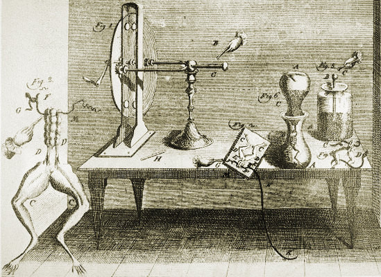
Figura 2.1: Laboratório de Luigi Galvani.
Mais tarde, conseguiu o mesmo efeito sem precisar do gerador
eletrostático, espetando dois fios de metais diferentes na pata da rã;
quando juntava os dois fios, a pata encolhia-se. Galvani atribuiu o
efeito a uma eletricidade de origem animal.
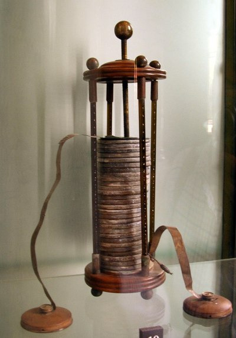
Figura 2.2: Pilha de Volta.
O físico italiano Alessandro Volta (1745–1827) demonstrou que a origem
da eletricidade observada por Galvani não eram os organismos vivos. Na
realidade, o contacto entre dois metais diferentes dentro de qualquer
solução química produz uma transferência de cargas elétricas, chamada
corrente elétrica, que nos seres vivos
provoca efeitos como a contração muscular ou o sabor azedo na
língua. De facto, o sistema nervoso produz transferências de carga
(correntes) que permitem controlar os movimentos musculares e a
transferência de cargas entre a língua e os alimentos estimula o
sistema nervoso dando origem às sensações de sabor.
Em 1800 Volta construiu a primeira pilha, colocando alternadamente
discos de zinco e de cobre, sobrepostos e separados entre si por
discos de cartão molhado numa solução ácida. Repetindo a mesma
sequência de discos várias vezes, conseguiu produzir fluxos de carga
mais elevados e sentir os seus efeitos. Por exemplo, colocando as suas
mãos dentro de dois recipientes com água salgada, ligados aos dois
terminais da pilha, o choque elétrico nas suas mãos tornava-se
doloroso quando a pilha era formada por mais de 20 grupos de discos de
cobre e zinco. A figura 2.2 mostra uma das
pilhas construídas por Volta.
2.3. Força eletromotriz
Uma pilha química é constituída por duas barras
condutoras, chamadas elétrodos, embebidas
numa substância com iões (eletrólito). O
eletrólito pode ser líquido ou sólido, desde que tenha iões positivos
e negativos; por exemplo, uma solução de água e sal de mesa (cloreto
de sódio) em que existem iões de sódio, com carga elétrica positiva, e
iões de cloro, com carga elétrica negativa.
No metal dos elétrodos da pilha existe uma nuvem de eletrões de
condução e quando se liga outro condutor externo entre eles, os
eletrões livres podem deslocar-se transportando carga através do
condutor externo. O deslocamento da nuvem eletrónica da origem a
acumulação de cargas de sinais opostos nos extremos dos elétrodos que
estão dentro do eletrólito e os iões de cargas opostas no eletrólito
deslocam-se em sentidos opostos. Os iões positivos, também chamados
catiões, são atraídos pelo elétrodo para o qual a nuvem eletrónica foi
deslocada, combinando-se com os eletrões acumulados nesse elétrodo. Os
iões negativos, ou aniões, deslocam-se para o outro elétrodo,
fornecendo os eletrões que estavam em falta devido ao deslocamento da
nuvem eletrónica. O elétrodo para onde são atraídos os iões positivos
chama-se cátodo, comumente identificado nas
pilhas com um sinal positivo e o elétrodo para onde circulam os iões
negativos do eletrólito chama-se o ânodo e é
comumente identificado com um sinal negativo.
Para manter o movimento da nuvem eletrónica é necessário que existam
iões de sinais opostos no eletrólito e enquanto esse movimento
perdura, mais iões desaparecem no eletrólito devido à troca de
eletrões com os elétrodos. O fluxo de cargas através dos elétrodos e
do condutor que os liga cessará quando a pilha estiver descarregada,
isto é, quando a concentração de iões no eletrólito for inferior a um
valor mínimo.
Para garantir o funcionamento de uma pilha também é necessário que num
dos elétrodos seja mais fácil a passagem de eletrões dos átomos para a
nuvem de condução, o que se consegue usando dois metais diferentes
para os dois elétrodos. Quando dois metais diferentes são colocados em
contacto um com o outro, a nuvem de eletrões de condução tem uma
tendência para se deslocar do metal mais eletropositivo (o que cede
com maior facilidade os seus eletrões) para o menos
eletropositivo. Diferentes materiais condutores podem ser ordenados
numa série galvânica, em que os metais
mais eletropositivos aparecem no topo da lista e os menos
eletropositivos na base (a ordem na série depende também do eletrólito
usado). A tabela 2.1 mostra a série galvânica para alguns
condutores, quando o eletrólito é água de mar.
Tabela 2.1: Série galvânica com eletrólito de água de mar.
Magnésio
Zinco
Alumínio
Chumbo
Ferro
Cobre
Tungsténio
Prata
Ouro
Platina
Grafite
O uso da tabela pode ilustrar-se no caso concreto da primeira pilha
construída por Volta que usava eletrólito de água salgada. Os dois
metais usados para os elétrodos são zinco e cobre e como o zinco está
acima do cobre na tabela, quer dizer que os eletrões de condução se
deslocam do zinco para o cobre e os iões positivos do eletrólito são
atraídos pelo cobre; como tal, o elétrodo de cobre é o cátodo (+) e o
elétrodo de zinco é o ânodo (
).
A corrosão dos metais no ar ou numa solução líquida também está
relacionada com a transferência de eletrões de condução. Os iões
negativos de oxigênio passam eletrões para o metal, combinando-se com
os átomos do metal na superfície para formar um sal. O processo de
galvanização consiste em colocar na superfície de um objeto metálico
uma camada de zinco que garante que o movimento dos eletrões de
condução será do zinco para o outro metal, servindo o zinco como ânodo
que atrai os iões de oxigênio (aniões); o zinco é oxidado enquanto o
outro metal (cátodo) permanece protegido da corrosão.
O lado esquerdo da figura 2.3 mostra uma pilha ligada a um
circuito e o lado direito mostra o diagrama usado para representar
esquematicamente esse conjunto. A pilha representa-se com duas barras
paralelas, que lembram os dois discos metálicos na pilha original de
Volta, separados por uma pequena região (o eletrólito). Usa-se uma
barra mais comprida para representar o cátodo (elétrodo positivo). As
setas na figura indicam a direção do movimento dos eletrões de
condução, que se deslocam no sentido oposto ao campo elétrico
estabelecido pela pilha através dos condutores.
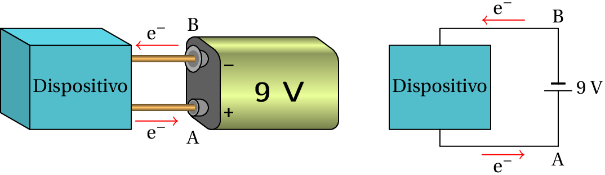
Figura 2.3: Pilha ligada a um dispositivo e representação diagramática do sistema.
Se os eletrões de condução fossem completamente livres, seriam
acelerados pela força elétrica no condutor. No entanto, no circuito e
nos elétrodos existem forças dissipativas que contrariam o movimento
dos eletrões de condução. O trabalho realizado pelas
forças dissipativas é igual à energia fornecida pela pilha, através do
campo elétrico. Isto é, durante o percurso de cada eletrão de condução
desde o ânodo até o cátodo, o campo elétrico realiza um trabalho igual
à diminuição da energia potencial eletrostática
(
) desse eletrão entre o ânodo e o cátodo. Como a
carga dos eletrões é negativa, conclui-se que o potencial no cátodo é
maior do que no ânodo, e a diferença de potencial entre eles é igual
a:
(2.10)
onde
é a carga elementar (valor absoluto da carga do eletrão). A
energia
fornecida a cada eletrão de condução é
igual à diferença entre a energia necessária para que um anião no
eletrólito transfira um eletrão ao ânodo e a energia necessária para
que o cátodo transfira um eletrão a um catião do eletrólito.
Essa diferença de energia tem um valor específico para cada par de
condutores usados para os elétrodos e para cada eletrólito. Assim
sendo, a constante
, com unidades de volt, tem um valor
típico para cada tipo de pilha, que depende apenas dos metais e do
eletrólito usado, e chama-se força eletromotriz da pilha, ou
de forma abreviada, f.e.m. O valor da f.e.m. para a
maioria das pilhas é entre 1 volt e 4 volt. Na pilha da
figura 2.3, o valor da f.e.m. é de 9 V e é obtido colocando
no interior da pilha seis pilhas pequenas de 1.5 V, uma a seguir à
outra, tal como Volta colocou alternadamente vários discos de zinco,
cartão e cobre para obter maior energia; a figura 2.4 mostra um
diagrama que ilustra melhor essas seis pilhas em
série.
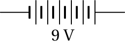
Figura 2.4: Pilhas ligadas em série.
A tabela 2.2 mostra os materiais usados para os elétrodos e
o eletrólito em vários tipos de pilhas usadas atualmente e os valores
da f.e.m. obtida em cada caso.
Tabela 2.2: Alguns tipos de pilhas usados atualmente.
Tipo
cátodo
ânodo
eletrólito
f.e.m.
seca
C
Zn
MnO2/ NH4Cl
1.5 V
alcalina
C
MnO2
KOH
1.5 V
mercúrio
HgO
Zn
NaOH
1.35 V
óxido de prata
Ag2O
Zn
NaOH
1.35 V
NiCd
NiO
Cd
KOH
1.2 V
NiMH
NiO
liga metálica
KOH
1.2 V
iões de lítio
Li2O/ Co
C
Li
3.7 V
Os tipos de pilhas nas três últimas linhas da tabela 2.2 são
recarregáveis; ou seja, as reações químicas
nos elétrodos são reversíveis. Utilizando uma fonte externa para
contrariar o sentido normal do fluxo das cargas, consegue-se diminuir
a quantidade dos sais acumulados nos elétrodos, separando-os nos
metais originais e os iões do eletrólito e aumentando assim a carga
total dos iões do eletrólito e ficando a pilha num estado semelhante
ao inicial. Apoś vários ciclos de carga e descarga, parte dos sais
saem separam-se dos elétrodos e passam para o eletrólito torna-se cada
vez mais difícil recuperar todo o metal e o eletrólito original,
ficando a pilha "viciada". No caso das pilhas de iões de lítio, o
cátodo não é um único bloco sólido, mas são várias partículas em
suspensão dentro do próprio eletrólito, evitando-se assim que a pilha
fique viciada e permitindo muitos mais ciclos de carga e
descarga. Numa pilha não recarregável, a inversão da corrente apenas
aquece a pilha, com o perigo de queimá-la ou até fazê-la explodir sem
ser recarregada.
Outra caraterística importante de cada pilha, para além da sua f.e.m.,
é a sua carga máxima,
, que indica
a carga total dos iões positivos (igual ao valor absoluto da carga dos
iões negativos) no eletrólito, no seu estado inicial, com os elétrodos
completamente limpos de sais. A energia máxima que a pilha poderia
fornecer, se fosse possível manter o fluxo de cargas nos elétrodos até
o eletrólito ficar completamente livre de iões, é
(2.11)
2.4. Condutores e semicondutores
Num condutor sólido existe uma nuvem muito densa de eletrões de
condução que não estão ligados a nenhum átomo em particular, conforme
referido no capítulo sobre carga e força elétrica. Os átomos de cobre,
por exemplo, têm 29 eletrões à volta do núcleo no seu estado neutro;
28 desses eletrões estão fortemente ligados ao átomo, enquanto que o
último eletrão se encontra numa órbita mais distante do núcleo e sai
com facilidade para a nuvem de eletrões de condução.
Um pequeno deslocamento da nuvem de eletrões de condução faz acumular
um excesso de cargas negativas numa região e cargas positivas na
região oposta. As cargas positivas são átomos com um eletrão a menos
em relação ao número de protões. Quando se liga um fio condutor aos
elétrodos de uma pilha, a nuvem eletrónica é atraída pelo elétrodo
positivo e repelida pelo elétrodo negativo; estabelece-se no condutor
um fluxo contínuo de eletrões do elétrodo negativo para o positivo.
Os semicondutores são materiais que não têm cargas
de condução, como os isoladores, mas que podem adquirir cargas de
condução (passando então a ser condutores) através de diversos
mecanismos: aumento da temperatura, incidência de luz, presença de
cargas elétricas externas ou existência de impurezas dentro do próprio
material.
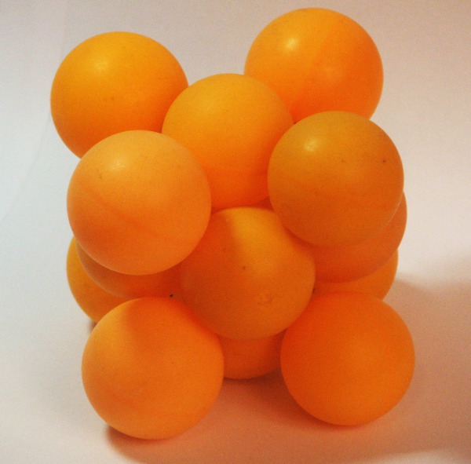
Figura 2.5: Cristal FCC.
Atualmente os semicondutores são construídos a partir de silício ou
germânio. Os átomos de silício e de germânio têm 4 eletrões de
valência. Num cristal de silício ou germânio, os átomos estão
colocados numa rede uniforme, como na figura 2.5 e os 4
eletrões de valência ligam cada átomo aos átomos na sua vizinhança.
Já os átomos de arsénio têm 5 eletrões de valência. Se dentro dum
cristal de silício forem colocados alguns átomos de arsénio, cada um
deles fica ligado aos átomos de silício na rede, por meio de 4 dos
seus eletrões de valência e o quinto eletrão de valência fica livre e
contribui para uma nuvem de eletrões de condução. Obtém-se assim
um semicondutor tipo N, capaz de
conduzir cargas através do material, pelo mesmo mecanismo que nos
condutores (nuvem de eletrões de condução).
Os átomos de gálio têm três eletrões de valência. Nos
semicondutores tipo P existem
alguns átomos de gálio dentro de um cristal de silício (ou germânio);
os 3 eletrões de valência de cada átomo de gálio ligam-no à rede,
ficando uma buraco no átomo de silício que tem
um eletrão de valência que não está ligado a um eletrão de um átomo
vizinho.
Os buracos podem ser utilizados também para transportar carga; os
eletrões de condução podem deslocar-se para um átomo de gálio na
vizinhança, onde exista um desses buracos. Se dois extremos de um
semicondutor do tipo P forem ligados aos elétrodos de uma pilha, os
buracos na vizinhança do elétrodo negativo são preenchidos com
eletrões fornecidos por esse elétrodo, e a seguir podem passar
sucessivamente para outros buracos no cristal. Os eletrões deslocam-se
no sentido do elétrodo negativo para o positivo, mas deslocam-se
apenas entre dois buracos vizinhos. Já os buracos percorrem todo o
percurso desde o elétrodo positivo até ao negativo. É um pouco como a
circulação de automóveis em hora de ponta, quando há filas compactas;
cada automóvel consegue apenas deslocar-se uma pequena distância no
sentido do avanço, mas aparecem buracos na fila, que se deslocam
rapidamente no sentido oposto.
A figura 2.6 mostra uma forma habitual de representar os
dois tipos de semicondutores, N e P, de forma esquemática. Os círculos
representam cargas fixas no cristal, que não se podem deslocar e as
cargas sem um círculo à volta representam as carga de condução. No
semicondutor do tipo N as cargas positivas fixas são os átomos de
arsénio, ou de outro elemento com 5 eletrões de valência, colocados
dentro do cristal de silício ou outro elemento com 4 eletrões de
valência e as cargas de condução são os eletrões cedidos por esse
átomos de arsénio. No semicondutor do tipo P, as cargas fixas são
átomos de um elemento com 3 eletrões de valência e as cargas livres
são os buracos que ficam na ligação covalente desses átomos com um dos
átomos vizinhos, com 4 eletrões de valência.
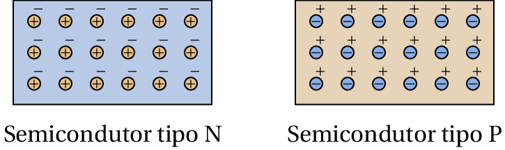
Figura 2.6: Os dois tipos de semicondutores.
Na figura 2.7 estão representadas 3 barras de materiais
diferentes, ligadas entre dois pontos A e B entre os que existe
diferença de potencial (
maior que
). No
primeiro caso, trata-se de um semicondutor de tipo P, em que as cargas
de condução positiva deslocam-se do ponto A para o ponto B, já que o
campo elétrico aponta do ponto com maior potencial (A) para o ponto
com menor potencial (B). No segundo caso, um semicondutor de tipo N ou
um metal, as cargas de condução negativas deslocam-se de B para A, no
sentido oposto ao campo elétrico. Finalmente, existem condutores com
cargas de condução positivas e negativas como, por exemplo, o gás
ionizado dentro de uma lâmpada
fluorescente.
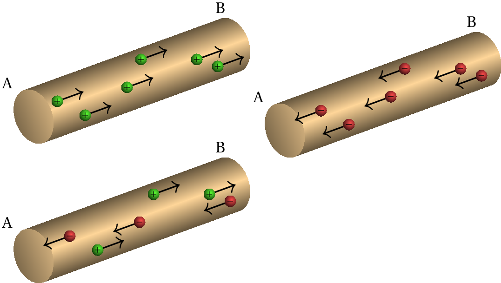
Figura 2.7: Três condutores diferentes com diferentes tipos de cargas de condução.
Nos três casos ilustrados na figura, a mesma quantidade de energia
(
) é retirada da região A e a mesma quantidade de
energia (
) passa para a região B. No caso do
semicondutor do tipo P, a saída de 6 cargas elementares de A retira
energia em A e a entrada dessas cargas em B aumenta a energia em B. No
caso da barra semicondutora do tipo N, a energia das cargas que saem
de B tem o sinal oposto de
e, por isso, faz aumentar a
energia disponível em B; da mesma forma, a entrada das cargas de
condução negativas em A faz diminuir a energia disponível em A. No
terceiro caso da figura, metade da energia é transferida de A para B
pelas cargas de condução positivas e a outra metade é transferida no
mesmo sentido pelas cargas de condução negativas.
Observe-se que, na figura 2.7, a energia potencial
eletrostática que é retirada do ponto A é maior que a energia que
passa para o ponto B, porque
. A diferença
entre essas energias é igual à energia dissipada no condutor; nos dois
primeiros casos na figura, essa energia é transferida para o condutor
na forma de calor, aquecendo-o, e no terceiro caso, se o condutor for
uma lâmpada fluorescente, a parte dessa energia é convertida em luz, e
a restante é calor que aquece a lâmpada.
Existem outros mecanismos de condução de cargas elétricas, como em
certos detetores de incêndio
(figura 2.8). No interior do detetor existe uma câmara de
ionização (cilindro preto na figura) onde a passagem de cargas é
devida à produção de partículas alfa emitidas por uma substância
radioativa. As partículas alfa são núcleos de hélio, com carga igual a
duas unidades elementares de carga. As partículas são disparadas para
fora da substância radioativa, passando pelo ar à volta da substância,
antes de serem recolhidas num elétrodo no detetor. A presença de fumo
introduz partículas sólidas no ar, que travam as partículas alfa,
produzindo uma redução do número de partículas recolhidas no elétrodo,
e essa redução do fluxo de cargas faz disparar um sinal de alarme.
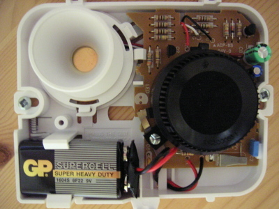
Figura 2.8: Detetor de incêndios.
2.5. Corrente elétrica
A corrente elétrica, representada pela letra
, é o fluxo das cargas
de condução dentro de um material. A
intensidade da corrente
é a taxa de
transferência da carga, através de uma secção, por unidade de tempo
(2.12)
onde
é o valor absoluto da carga total que passa pela
secção durante um intervalo de tempo
. De forma inversa,
a carga total que passa através de uma secção de um condutor, desde um
instante
até outro instante
, é o integral da corrente
,
(2.13)
No sistema internacional de unidades a unidade usada para medir a
corrente elétrica é o ampere, designado pela
letra A, que equivale à transferência de uma carga de um coulomb cada
segundo:
(2.14)
A corrente costuma ser representada vetorialmente por
, com
módulo igual á intensidade da corrente, direção igual à direção do
movimento das cargas de condução e com o mesmo sentido em que é
transferida energia. Tal como foi referido, nas três barras condutoras
da figura 2.7 há transferência de energia do ponto A para o
ponto B e, portanto, a corrente nos três casos é no sentido de A para
B, como indica o diagrama da figura 2.9. A corrente em
qualquer condutor ou semicondutor de qualquer tipo segue sempre o
sentido do campo elétrico, isto é, do ponto com maior potencial para o
ponto com menor potencial.
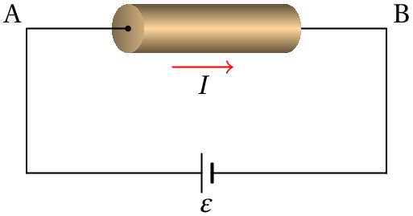
Figura 2.9: Corrente
numa barra condutora.
Se o condutor não for retilíneo (figura 2.10), as linhas de
campo elétrico seguem a direção do condutor, desde o ponto onde o
potencial é maior até onde o potencial é menor. A relação entre o
campo elétrico no condutor e a diferença de potencial entre os
extremos é,
(2.15)
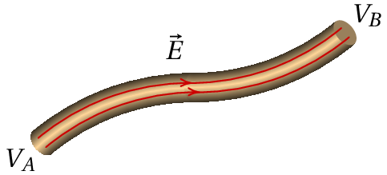
Figura 2.10: Campo elétrico num condutor ligado a uma voltagem
(
).
O módulo do campo campo elétrico poderá ser diferente em diferentes
partes do percurso no integral de linha do primeiro membro da equação,
mas usando o teorema do valor médio obtém-se a seguinte relação para o
valor médio do campo no condutor:
(2.16)
onde
é o comprimento do condutor e
a voltagem
(diferença de potencial entre os extremos).
Como tal, quanto mais comprido for o fio condutor que liga os pontos A
e B, com potenciais fixos
e
, menor será
o campo elétrico médio. A intensidade da corrente depende do módulo do
campo elétrico e da área da secção transversal do fio; quanto maior
for o módulo do campo, mais rápido é o movimento da nuvem de cargas de
condução e maior é a corrente; quanto maior for a área da secção
transversal, mais grosso é o fio e o movimento da nuvem de cargas de
condução produz então uma corrente maior.
2.6. Potência elétrica
Como já foi referido, o transporte de cargas de condução num condutor
acarreta dissipação de energia, geralmente na forma de calor, fenómeno
esse designado de efeitoJoule. Se num condutor circula corrente
estacionária
, durante um intervalo de tempo
entra
uma carga
por um extremo do condutor e sai a mesma carga
pelo extremo oposto. No condutor da figura 2.11, o sentido
da corrente indica que
é maior que
; se
as cargas de condução são positivas, deslocam-se no sentido da
corrente, ou seja, entra carga
pelo extremo A e sai
carga
pelo extremo B. A energia elétrica da carga que
entra é
e a energia da carga que sai é
. Ou seja, as cargas perdem energia
elétrica na passagem pelo condutor.
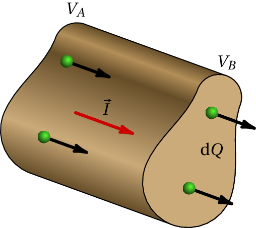
Figura 2.11: Cargas que entram e saem num condutor
com corrente, durante um intervalo
.
A energia elétrica que as cargas de condução perdem na passagem pelo
condutor, durante o intervalo de tempo
é
(2.17)
onde
é a voltagem no condutor. O
valor instantâneo da potência elétrica,
, dissipada no condutor,
obtém-se dividindo
pelo intervalo de tempo
. O resultado obtido é
(2.18)
Essa é a potência dissipada em calor num condutor com voltagem
e corrente
. O resultado foi obtido no caso de um
condutor com portadores de cargas positivas, mas é o mesmo resultado
que se obtém para qualquer outro condutor com cargas de condução
negativas ou cargas de ambos sinais. A partir das definições de volt
e ampere, pode-se verificar que o produto dessas duas unidades é igual
a joule sobre segundo, que é a unidade SI de
potência, o watt (W), igual a
um joule sobre
segundo.
Para manter a corrente no condutor, é necessário que a mesma potência
, dissipada no condutor, seja fornecida pela bateria que estabelece
a diferença de potencial
. Assim, a potência fornecida pela
bateria é também
, em que
é a diferença de
potencial entre os terminais da bateria. Numa bateria "ideal" essa
diferença de potencial é igual ao valor da f.e.m. (
) e,
como tal, a potência fornecida por uma bateria ideal é:
(2.19)
No próximo capítulo mostra-se que, numa bateria real,
é
realmente menor que o valor da f.e.m., e diminui em função da
corrente.
Exemplo 2.2
Num condutor, ligado a uma pilha ideal com f.e.m. de 1.5 V, circulam
1016 eletrões de condução durante 2 segundos. Calcule: (a)
A corrente média; (b) A energia fornecida pela pilha durante
esse intervalo; (c) A potência média fornecida pela pilha;
(d) Se a carga máxima da pilha for 3 A·h e se fosse possível
manter a mesma corrente média até a pilha descarregar totalmente, quanto
tempo demoraria a pilha a descarregar?
Resolução. (a) A carga transferida é o valor absoluto da
carga dos 1016 eletrões:
e a corrente média é:
(b) A energia fornecida pela pilha é igual à energia elétrica
dissipada no condutor:
(c) A potência média fornecida é igual a essa energia, dividida
pelo intervalo de tempo:
(d)O tempo obtém-se dividindo a carga máxima que pode ser transferida,
pela corrente média:
substituindo, obtém-se:
2.7. Voltímetros e amperímetros
Para medir a diferença de potencial entre dois pontos num dispositivo,
basta tocar nesses pontos com os terminais de um
voltímetro. Se a diferença de potencial não ultrapassa
o valor máximo aceite pelo voltímetro, essa operação é
bastante segura e muito útil para diagnosticar problemas nos
dispositivos.
Para medir a corrente elétrica usa-se um
amperímetro. Igual que no caso do
voltímetro, a corrente a ser medida não deverá ultrapassar o valor
máximo aceite pelo amperímetro. O problema neste caso é que um bom
amperímetro deverá facilitar a passagem das cargas, para não
interferir com o dispositivo onde vai medir-se a corrente. Ou seja,
ligando o amperímetro entre dois pontos de um dispositivo, a maioria
das cargas passam pelo amperímetro e não pelo dispositivo, já que
encontram um percurso mais livre através do amperímetro. Assim sendo,
a corrente através do amperímetro pode ser muito elevada, correndo-se
o risco de queimá-lo.
Como tal, há que ter maior cuidado no uso de um amperímetro do que um
voltímetro. Antes de tocar num dispositivo com os terminais de um
amperímetro, é necessário "cortar" o fluxo de carga no ponto onde vai
medir-se a corrente e fazer uma ponte com os terminais do amperímetro,
entre os dois pontos onde foi aberto o circuito, para garantir que
todas as cargas que passem pelo amperímetro têm que passar pelo
dispositivo, que foi concebido para limitar o fluxo das cargas. Um
multimetro combina as funções de voltímetro
e amperímetro num único aparelho de medição.
Perguntas
(Para conferir a sua resposta, clique nela.)
A força eletromotriz de uma pilha química:
É
independente das reações químicas no seu interior.
Depende
do tamanho da pilha.
Depende
da sua carga máxima.
É
independente do tamanho dos elétrodos.
Nenhuma
das outras respostas.
Se o custo da energia elétrica fosse de 10 cêntimos por kilowatt-hora,
quanto custaria manter uma torradeira de 660 W a funcionar
durante meia hora?
15
cêntimos.
12
cêntimos.
6.9
cêntimos.
3.3
cêntimos.
1.7
cêntimos.
A corrente num condutor aumenta linearmente desde um valor inicial de
3 A, em
, até o valor final 6 A, em
h. Determine a carga
total transportada pelo condutor durante esse intervalo.
48.6 kC
32.4 kC
64.8 kC
97.2 kC
16.2 kC
Uma pilha AA tem uma carga total de 8 A·h. Se for ligada a um
dispositivo, produzindo uma corrente média de 50 mA durante 50 horas,
com que percentagem da sua carga ficará após as 50 horas?
31%
50%
21%
69%
131%
Se cada segundo 4.0×1018 eletrões e 1.5×1018
protões atravessam a secção transversal de um tubo de descarga de
hidrogénio, a corrente média no tubo é:
0.40 A
0.56 A
0.88 A
1.5 A
4.0 A
Problemas
Um eletrão é acelerado no vácuo, a partir do repouso, através de uma
diferença de potencial de 220 V. Determine a velocidade final do
eletrão (a massa do eletrão encontra-se no apêndice A).
Num tubo de raios X são libertados eletrões,
inicialmente em repouso, que são logo acelerados no vácuo do tubo por
meio de um campo elétrico, atravessando uma região em que a diferença
de potencial é de 4 kV. Os eletrões logo colidem com um alvo metálico
produzindo radiação X. (a) Determine a energia cinética e a
velocidade com que os eletrões colidem com o alvo. (b) Se a
variação de potencial se estender por uma distância de 8 dm, determine
a intensidade do campo elétrico médio.
Uma certa bateria de automóvel tem carga máxima de 250 Ah, que
corresponde à carga disponível quando está carregada a 100%.
(a) Depois de algum uso, a bateria descarrega até 60% da sua
carga máxima. Qual é a carga, em coulombs, com que fica a bateria?
(b) A seguir, a bateria liga-se a um carregador de 12 V para a
recarregar e observa-se que inicialmente a corrente do carregador tem
intensidade de 7 A, mas 6 horas depois diminui a 3 A. Admitindo
diminuição linear da corrente em ordem ao tempo, com que percentagem
da sua carga máxima fica a bateria no fim das 6 horas?
Uma pilha recarregável de Ni-MH tem f.e.m. de 1.2 V e carga máxima
2300 mA·h. Determine a energia potencial elétrica máxima que essa
pilha pode armazenar.
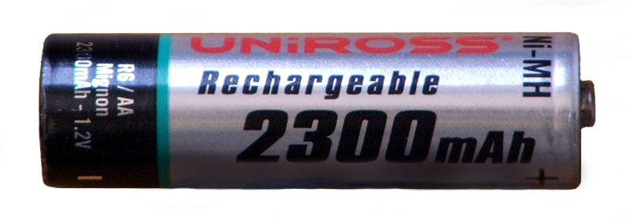
Uma calculadora pode funcionar com um adaptador que fornece 40 mA, a 3
V, ou com duas pilhas AA cada uma com 1.5 V e carga máxima de 8 Ah,
ligadas em série. Admitindo que a calculadora utiliza a mesma potência
quando funciona a pilhas ou com o adaptador, por quanto tempo pode
funcionar a pilhas?
Numa casa, o fusível do fogão elétrico na caixa de fusíveis é de 30
A. Qual é a potência máxima que pode ter o fogão? (admita diferença de
potencial de 230 V).
A corrente num cabo varia de acordo com a função
, onde
mede-se em miliampere e
em segundos. (a) Que carga
transporta o cabo desde
até
s? (b) Qual o valor da
corrente constante que transporta a mesma quantidade de carga no mesmo
intervalo de tempo?
Num condutor ligado a uma pilha com f.e.m. de 1.5 V, circulam
9.6×1021 eletrões de condução durante 2 horas. Determine:
(a) A intensidade da corrente média.
(b) A energia fornecida pela pilha durante esse intervalo.
(c) A potência média fornecida pela pilha.
(d) Se a carga inicial da pilha era de 3 A·h, com que carga fica
após as 2 horas?
Para manter a temperatura a 20 °C num
quarto, durante um dia de inverno, estima-se ser necessária
energia de 132 kJ cada minuto. Se essa energia for
fornecida por um aquecedor elétrico, ligado à tensão de 220
V disponível na casa:
(a) Determine a intensidade da corrente no aquecedor.
(b) Se o custo da energia elétrica for de 12 cêntimos por kw·h, qual
o custo de manter ligado o aquecedor durante 10 minutos?
A força eletromotriz é a diferença entre as energias associadas às
reações nos dois elétrodos, dividida pela carga transferida nessas
reações. Como tal, depende do tipo de reações.
(clique para continuar)
Pergunta 1, resposta B: Errada
O tamanho da pilha determina o número máximo de cargas, por unidade de
tempo, que podem ser transferidas nas reações químicas (corrente
máxima) mas não altera o tipo de reações, que são as que determinam a
energia transferida a cada carga (força eletromotriz).
(clique para continuar)
Pergunta 1, resposta C: Errada
A carga máxima determina o número máximo de moléculas que podem reagir
(energia total disponível) mas não determina a energia que essas
reações fornecem a cada carga (força eletromotriz).
(clique para continuar)
Pergunta 1, resposta D: Certa
O tamanho dos elétrodos não altera o tipo de reações químicas nos
elétrodos, que são as que determinam o valor da f.e.m.
(clique para continuar)
Pergunta 1, resposta E: Errada
Uma das outras quatro afirmações é correta.
(clique para continuar)
Pergunta 2, resposta A: Errada
Basta multiplicar o tempo em horas (1/2) pela potência em kW
(660/1000), para determinar a energia em kW·h, e multiplicar por 10
cêntimos.
(clique para continuar)
Pergunta 2, resposta B: Errada
Basta multiplicar o tempo em horas (1/2) pela potência em kW
(660/1000), para determinar a energia em kW·h, e multiplicar por 10
cêntimos.
(clique para continuar)
Pergunta 2, resposta C: Errada
Basta multiplicar o tempo em horas (1/2) pela potência em kW
(660/1000), para determinar a energia em kW·h, e multiplicar por 10
cêntimos.
(clique para continuar)
Pergunta 2, resposta D: Certa
Basta multiplicar o tempo em horas (1/2) pela potência em kW
(660/1000), para determinar a energia em kW·h, e multiplicar por 10
cêntimos.
(clique para continuar)
Pergunta 2, resposta E: Errada
Basta multiplicar o tempo em horas (1/2) pela potência em kW
(660/1000), para determinar a energia em kW·h, e multiplicar por 10
cêntimos.
(clique para continuar)
Pergunta 3, resposta A: Certa
A corrente média é (3+6)/2 = 4.5 A. Multiplicando por 3 obtém-se a
carga em unidades de A·h e multiplicando por 3600 (segundos por hora)
transforma-se de A·h para coulomb.
Pergunta 3, resposta B: Errada
A corrente média é (3+6)/2 = 4.5 A. Multiplicando por 3 obtém-se a
carga em unidades de A·h e multiplicando por 3600 (segundos por hora)
transforma-se de A·h para coulomb.
(clique para continuar)
Pergunta 3, resposta C: Errada
A corrente média é (3+6)/2 = 4.5 A. Multiplicando por 3 obtém-se a
carga em unidades de A·h e multiplicando por 3600 (segundos por hora)
transforma-se de A·h para coulomb.
(clique para continuar)
Pergunta 3, resposta D: Errada
A corrente média é (3+6)/2 = 4.5 A. Multiplicando por 3 obtém-se a
carga em unidades de A·h e multiplicando por 3600 (segundos por hora)
transforma-se de A·h para coulomb.
(clique para continuar)
Pergunta 3, resposta E: Errada
A corrente média é (3+6)/2 = 4.5 A. Multiplicando por 3 obtém-se a
carga em unidades de A·h e multiplicando por 3600 (segundos por hora)
transforma-se de A·h para coulomb.
(clique para continuar)
Pergunta 4, resposta A: Errada
A carga que a pilha fornece durante as 50 horas é 2.5 A·h, que é de
facto 31% da carga máxima, mas a pergunta pede a carga com que a pilha
fica após ter perdido esses 2.5 A·h.
(clique para continuar)
Pergunta 4, resposta B: Errada
Se ficasse com 50% da sua carga total, implicaria que a outra metade
(4 A·h) foi a carga que circulou pela resistência; calcule a carga que
circula pela resistência durante as 50 horas.
(clique para continuar)
Pergunta 4, resposta C: Errada
Encontre a carga que passa pela resistência, em unidades de A·h e
subtraia essa carga da carga inicial de 8 A·h, para determinar com que
carga fica a pilha, e divida pela carga inicial para dar a resposta em
percentagem da carga inicial.
(clique para continuar)
Pergunta 4, resposta D: Certa
A pilha fica com 5.5 A·h, que é 69% da carga total.
(clique para continuar)
Pergunta 4, resposta E: Errada
A corrente na resistência são cargas que estão a sair da pilha,
descarregando-a. Como tal, a carga da pilha está a diminuir e não pode
terminar com carga maior do que a carga inicial.
(clique para continuar)
Pergunta 5, resposta A: Errada
Os eletrões e protões deslocar-se-ão em sentidos opostos, ou seja, as
correntes devidas a eles têm o mesmo sentido e devem ser somadas.
(clique para continuar)
Pergunta 5, resposta B: Errada
A corrente calcula-se multiplicando o número de cargas que passam, a
cada segundo, pela carga de cada uma delas.
(clique para continuar)
Pergunta 5, resposta C: Certa
A pesar de que os dois tipos de partículas se deslocam em sentidos
opostos, como o sinal das suas cargas também é oposto, produzem
correntes no mesmo sentido.
(clique para continuar)
Pergunta 5, resposta D: Errada
A corrente calcula-se multiplicando o número de cargas que passam, a
cada segundo, pela carga de cada uma delas.
(clique para continuar)
Pergunta 5, resposta E: Errada
Os eletrões e protões deslocar-se-ão em sentidos opostos, ou seja, as
correntes devidas a eles têm o mesmo sentido e devem ser somadas.

A força eletromotriz é a diferença entre as energias associadas às reações nos dois elétrodos, dividida pela carga transferida nessas reações. Como tal, depende do tipo de reações.
(clique para continuar)